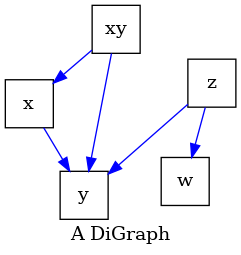
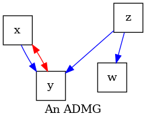

Note
Go to the end to download the full example code.
Drawing graphs and setting their layout for visual comparison#
One can draw a graph without setting the pos argument,
in that case graphviz will choose how to place the nodes.
In this example, we demonstrate how to visualize various different graphs with a fixed layout for the nodes, so that they are easily comparable.
This examples shows how to create a position layout for all the nodes (using networkx) and pass this to other graphs so that the nodes positions are the same for the nodes with the same labels.
Alternatively, one can create their own positions manually, or using software, such as Dagitty.
- 
- 

{'x': array([-1. , 0.15471958]), 'y': array([-0.42925134, -0.7990356 ]), 'z': array([0.90151211, 0.36916753]), 'w': array([ 0.62354034, -0.6548282 ]), 'xy': array([-0.09580111, 0.92997669])}
'pag.png'
import networkx as nx
import pywhy_graphs
from pywhy_graphs import CPDAG, PAG
from pywhy_graphs.viz import draw
# create some dummy graphs: G, admg, cpdag, and pag
# this code is borrowed from the other example: intro_causal_graphs.py ;)
G = nx.DiGraph([("x", "y"), ("z", "y"), ("z", "w"), ("xy", "x"), ("xy", "y")])
admg = pywhy_graphs.set_nodes_as_latent_confounders(G, ["xy"])
cpdag = CPDAG()
cpdag.add_edges_from(G.edges, cpdag.undirected_edge_name)
cpdag.orient_uncertain_edge("x", "y")
cpdag.orient_uncertain_edge("xy", "y")
cpdag.orient_uncertain_edge("z", "y")
# create a PAG from the CPDAG, with all undirected edges
pag = PAG()
pag.add_edges_from(G.edges, cpdag.undirected_edge_name)
# get the layout position for the graph G using networkx
pos_G = nx.spring_layout(G, k=10)
# let us inspect the positions.
# Notice that networkx and graphviz related software store positions as
# a dictionary keyed by node with (x, y) coordinates as values.
print(pos_G)
# draw the graphs (i.e., generate a graphviz object that can be rendered)
# each time we call draw() we pass the layout position of G
dot_G = draw(G, name="A DiGraph", pos=pos_G)
dot_admg = draw(admg, name="An ADMG", pos=pos_G)
dot_cpdag = draw(cpdag, name="A CPDAG", pos=pos_G)
dot_pag = draw(pag, name="A PAG", pos=pos_G)
# render the graphs using graphviz render() function
dot_G.render(outfile="G.png", view=True, engine="neato")
dot_admg.render(outfile="admg.png", view=True, engine="neato")
dot_cpdag.render(outfile="cpdag.png", view=True, engine="neato")
dot_pag.render(outfile="pag.png", view=True, engine="neato")
# .. note::
# The 'neato' engine is required in order to leverage the positions
# specified in the `draw` function. For more information, see the documentation
# on graphviz engines: https://graphviz.org/docs/layouts/neato/.
Total running time of the script: (0 minutes 0.431 seconds)
Estimated memory usage: 165 MB